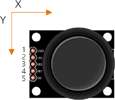

ESP32-S3 board
The brain that runs your uploaded sketch.
ESP32-S3 Lab · Day 19 of 30
Today you wire the control that steers every gamepad, and take it apart in your head first. Under the stick sit two potentiometers at right angles and a push button beneath them, so the same analogRead from the potentiometer day runs twice, once per axis, and the same digitalRead catches the press. Two numbers together name a point on a plane; the third is a plain button. Watch your hand become a coordinate on screen.
TSK-DAY19-JOYSTICK
Hand this to an agent so it can pull the lesson packet and coach you step by step.
01 First, know the pieces
Five things, one of them brand new. Tap Define on any part you haven't met — the answer opens as a field note you can read and dismiss without losing your place.
The brain that runs your uploaded sketch.

Spreads the pins into rows you can reach and label.

A thumb stick over two dials and a hidden push button.

Female ends grip the module's header pins; male ends reach the board.

Uploads code and opens Serial Monitor.
02 Make the physical circuit
The official Freenove diagram is your chart — schematic on top, the same circuit built on a breadboard below. Click it to enlarge. Each connection tells you where the wire goes and why.
Power from 3.3V. The module's pin is printed +5V, and the official diagram feeds it from the 3.3V rail — follow the diagram. Unplug USB before you move any wire.
03 One action at a time
This is the main path — you can finish the day without opening a single field note. Tap each step as you go to keep your place.
Seat the ESP32-S3 on the GPIO extension board and keep USB unplugged while you wire.
Push the five female jumper ends onto the module's header pins — the labels VRX, VRY, SW, +5V, and GND are printed beside them.
Connect VRX → GPIO 14, VRY → GPIO 13, and SW → GPIO 12.
Connect the module's +5V pin to the 3.3V rail and GND → GND, just as the chart shows.
Compare every wire to the chart before you plug in USB.
Open Sketch_13.1_Joystick.ino in Arduino IDE and upload it.
Open Serial Monitor and set the baud rate to 115200.
Glide the stick to its edges, then press it straight down like a button.
04 Read just enough code
The loop is three reads and one print — two axes with analogRead, the button with digitalRead, the two skills from earlier days sitting side by side. A printf line sends all three up at once. Switch to MicroPython if you'd rather see the same idea in Python; the wiring never changes.
int xyzPins[] = {14, 13, 12}; //x,y,z pins
void setup() {
Serial.begin(115200);
pinMode(xyzPins[2], INPUT_PULLUP); //z axis is a button.
}
void loop() {
int xVal = analogRead(xyzPins[0]);
int yVal = analogRead(xyzPins[1]);
int zVal = digitalRead(xyzPins[2]);
Serial.printf("X,Y,Z: %d,\t%d,\t%d\n", xVal, yVal, zVal);
delay(500);
}int xyzPins[] = {14, 13, 12}One array holds all three pins — X on GPIO 14, Y on GPIO 13, Z on GPIO 12. pinMode(xyzPins[2], INPUT_PULLUP)Sets the button pin so it rests at 1 and a press pulls it to 0. analogRead(xyzPins[0])Measures the X potentiometer's voltage as a number from 0 to 4095. Serial.printf("X,Y,Z: %d,\t%d,\t%d\n", …)Prints all three values on one tab-separated line, twice a second. Optional side path · same circuit
xVal=ADC(Pin(14))
yVal=ADC(Pin(13))
zVal=Pin(12,Pin.IN,Pin.PULL_UP)
xVal.atten(ADC.ATTN_11DB)
xVal.width(ADC.WIDTH_12BIT)
print("X,Y,Z:",xVal.read(),",",yVal.read(),",",zVal.value())ADC(Pin(14))Wraps GPIO 14 in an ADC reader — the same measurement analogRead does in C.Pin(12,Pin.IN,Pin.PULL_UP)The button pin with the internal pull-up — 1 at rest, 0 while pressed.Same pins, same three values. This version prints once a second where the Arduino sketch prints twice. Run it in Thonny if MicroPython is set up; otherwise skip it — it should never block the Arduino-first path.
05 Understand, don't memorise
Nothing here is new. Reading a potentiometer with analogRead was the potentiometer day; reading a button that rests HIGH and drops on a press was the button day. A joystick stacks two of those pots at right angles and hides a button beneath them, so one grip hands the board a position and a press. Seeing it as a composite, three familiar things in one part, is the whole lesson.
Under the stick sit two potentiometers mounted at right angles — one follows left-and-right, the other forward-and-back. Each is the same dial from the potentiometer day.
analogRead measures each pot's voltage as a number from 0 to 4095. Two axes means two of the reads you already know, one for X and one for Y.
On their own, X and Y are two loose dials. Together they name a point on a plane — X across, Y up and down — which is how a stick's position becomes a coordinate the code can steer with.
Push straight down and a hidden button closes to ground. INPUT_PULLUP holds GPIO 12 at 1 until the press pulls it to 0 — the same button-and-pull-up from earlier, riding on a third pin.
one joystick = two ADC axes naming a point (X, Y) on a plane + one button (Z)
At rest each pot sits near the middle of its travel, so each axis reads near the middle of the 0-to-4095 range — about 2048. Real pots and the ADC never land dead centre, so expect resting numbers anywhere from about 1800 to 2200, each board its own. The centre is a neighbourhood, not a single value.
The two pots share nothing but the stick. Tilt purely left-to-right and X swings while Y barely moves; tilt forward and Y swings while X holds. Because each axis is its own dial, the pair can point anywhere inside the square between the corners — that independence is what makes a plane rather than a line.
The internal pull-up holds the button pin HIGH with nothing else connected in the module. Pressing the stick closes the switch to ground, so the reading drops to 0 — a plain digital button carried alongside the two analog axes.
06 Know it worked
Success and recovery sit side by side, so you never have to go hunting when something looks off.
A new line lands twice a second. At rest both axes sit near mid-scale — around 2048, though real pots land anywhere from about 1800 to 2200, and your exact numbers will differ. A full push drives one axis toward 0 or 4095, and a straight-down press flips Z from 1 to 0.
07 Make the idea yours
Same working circuit, one new habit — reading the stick as a point rather than two loose numbers. It fits inside today's 20 minutes.
Let the stick rest and write down the X and Y numbers. Neither will be exactly 2048 — note how far each sits from it, then watch a few more lines to see the resting values drift by a handful even while nothing touches the stick. That is the centre-is-a-neighbourhood idea in your own numbers.
Push X fully one way, then fully the other, and record its lowest and highest — near 0 and near 4095. Do the same for Y. Those four numbers are your two axis spans: the edges of the square the stick can point inside.
Now hold the stick partway toward a corner and read the pair as one coordinate — X across, Y up. Nudge it and watch both numbers change together. That moving (X, Y) pair is exactly the position a game would steer with, and why two dials beat one.
08 Learn it with a hand on the tiller
Every lesson ships with a code and a machine-readable packet, so an agent can guide you with full context.
TSK-DAY19-JOYSTICK
How the agent should behave: guide one physical connection at a time and wait for confirmation, but teach the joystick as a composite — two analog axes that together name a point on a plane, plus one digital button, all skills the learner already has. Explain terms on request, and always check wiring, board, port, and USB before changing code.
Keep your place
Mark it complete — it shows on your course map, and your place is saved on this device.